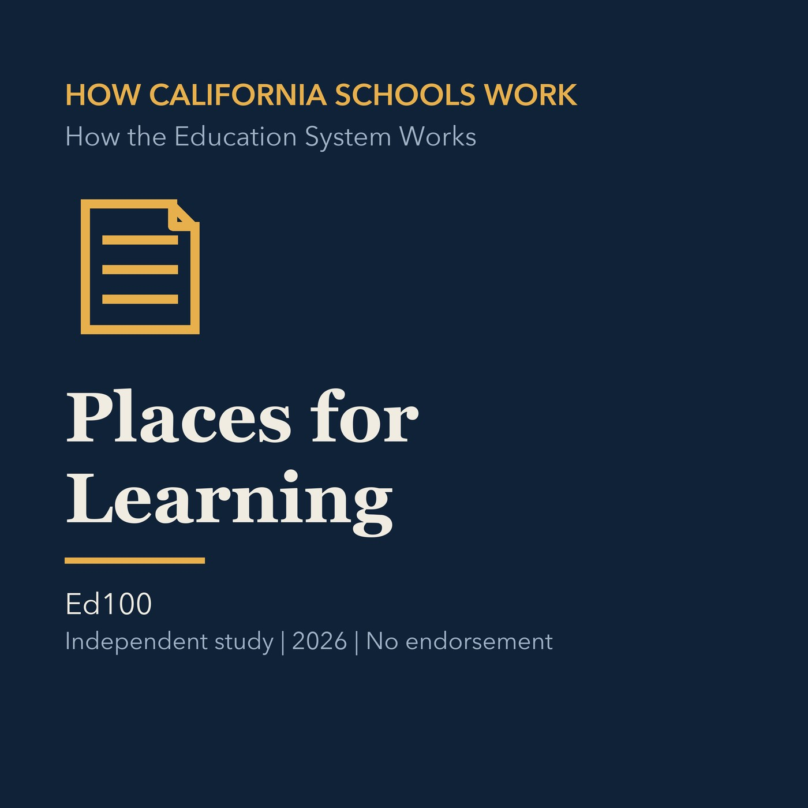

EPISODE 05
Places for Learning
Examines how addresses, districts, and school options shape where students learn.

- Stable GUID
450c4113-431f-5955-b045-f5839f4be831- Release
- how-california-schools-work-v2026.2
- SHA-256
a30095daf93fe45271601d002e58a0d04645287851471541b7e274b22b68ce96